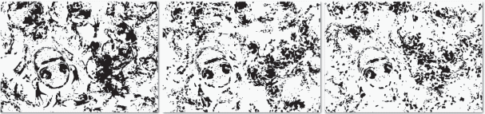

|
| This image, when stared at for a while, can reveal four
instances of a familiar figure. Two of the figures are easier to detect than the others.
Locally there is little meaningful information, and we perceive the figures only when
observing the whole figures.
|
| |
 |
|
A classic example of an emergence image. Although at
first sight the left image looks meaningless, suddenly we perceive
the central object as the Dalmatian dog pops out. |
|
| |
| (Left) Emergence images, when observed through small windows,
look meaningless. Although we perceive the subject in the whole image (middle), the smaller
sized segments, in isolation, look like random patches. (Right) In contrast, the elephant
can be recognized through similar windows of the normal shaded scene. |
|
 |
|
| |
 |
|
We often fail to perceive an emergence image when the subject
is in an uncommon pose. Among the users who were shown the above images, the average success
rate was only 54% and 4%, respectively. When the inverted versions of these images were shown,
the success rates went up to 96% and 91%, respectively. |
|
| |
 |
| Typical emergence images generated by our synthesis algorithm.
We generate a range of examples on various subjects synthesized at different difficulty levels.
Each example contains exactly one subject. (Please refer to supplementary material for other examples.)
|
| |
 |
| In many computer vision recognition or segmentation algorithms,
the first stages comprise of multi-scale edge detection or other means of bottom-up region processing.
At multiple-scales, we detect edges using standard Canny edge detector, and retain the ones that
persists scales. Such curves are then linked together based on spatial proximity and curvature continuity.
We observe that while on the original renderings the method successfully extracts the feature curves
(right image in each box), on the emerging images the results can mostly be seen as noise. This indicates
the difficulty that bottom-up algorithms face when detecting objects in the emergence images.
|
| |
|  |
|
Emerging frog at various difficulty levels, increasing from left
to right. We control the difficultly by controlling the sampling density, breaking the silhouette
continuity, perturbing silhouette patches, and adding clutter using cut-perturb-paste. |
|
| |
| (Left) Difficulty level as perceived by users and as predicted by our
synthesis parameters. (Right) Perceived difficulty level in each category changes gradually. For example,
98% of the easy images were recognized by at least 80% of the observers. |
|
 |
|
| |